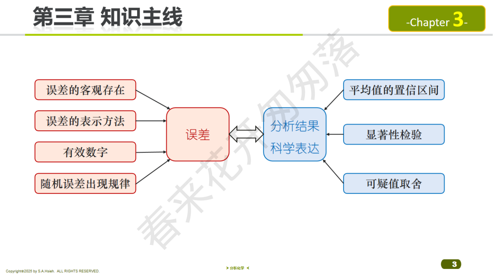
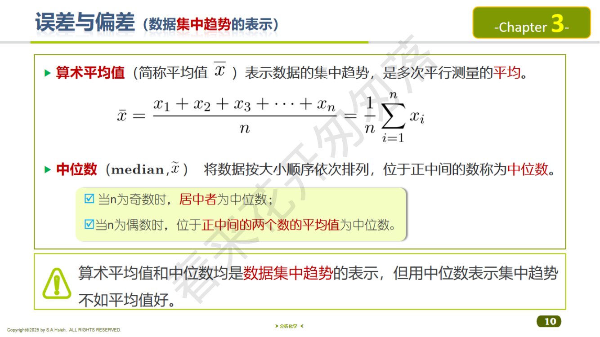
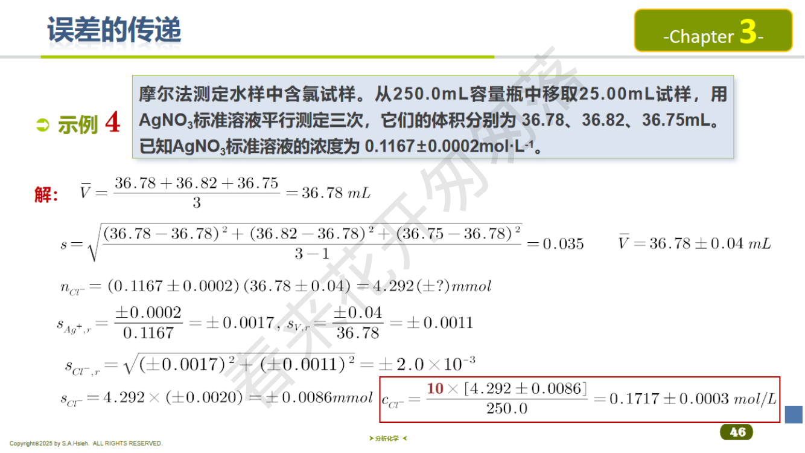
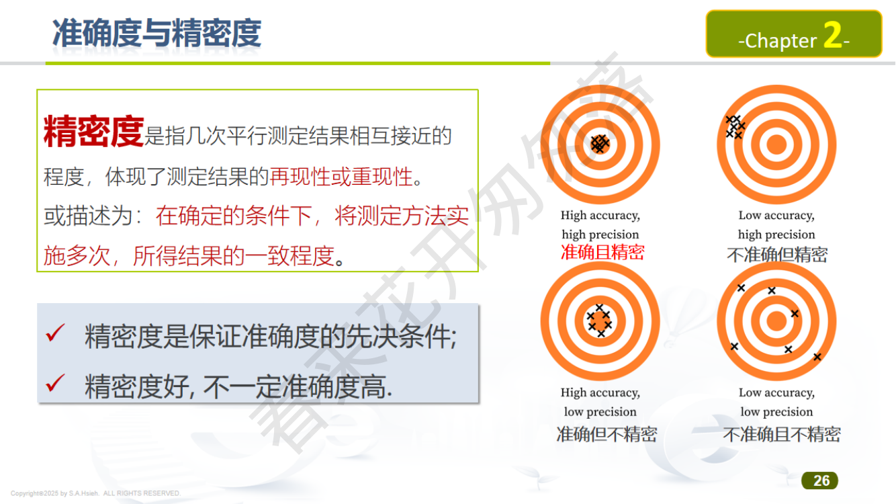
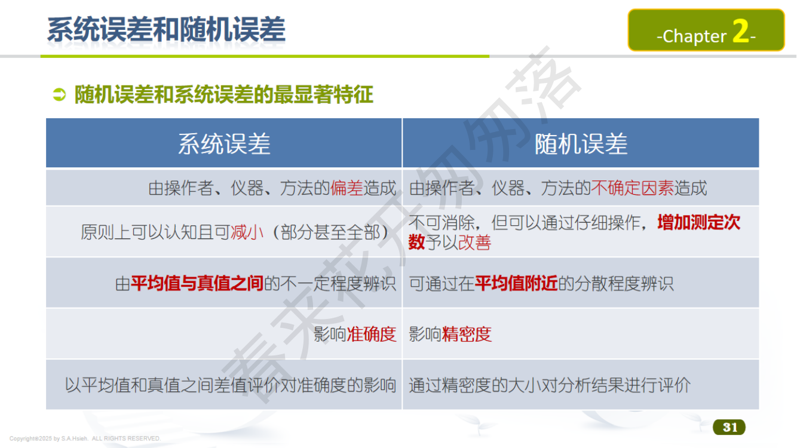

PPT: 误差的基本概念
真值（$\mu$ 或 $x_T$）：被测量的客观真实值。实际中常用"约定真值"（如标准参考物质的认定值）代替。
绝对误差（Absolute Error）：
$$E_a = x_i - x_T$$有正有负，表示测量值偏离真值的大小和方向。
相对误差（Relative Error）：
$$E_r = \frac{x_i - x_T}{x_T} \times 100\%$$更能反映测定的准确程度，便于不同量级测量的比较。
分析者甲：$E_a = 99.30 - 99.80 = -0.50\%$；$E_r = \dfrac{-0.50}{99.80}\times100\% = -0.50\%$
分析者乙：$E_a = 99.79 - 99.80 = -0.01\%$；$E_r = \dfrac{-0.01}{99.80}\times100\% = -0.010\%$
乙的准确度远高于甲。
当真值未知时，用偏差来衡量精密度：
算术平均值：$\bar{x} = \dfrac{1}{n}\displaystyle\sum_{i=1}^n x_i$，表示数据的集中趋势。
中位数（median, $\hat{x}$）：将数据按大小排列，位于正中间的数。$n$ 为奇数时取中间那个，$n$ 为偶数时取中间两个的平均值。中位数也可反映集中趋势，但效果不如平均值好。
绝对偏差： $d_i = x_i - \bar{x}$
相对偏差： $d_{r,i} = \dfrac{x_i - \bar{x}}{\bar{x}} \times 100\%$
平均偏差：
$$\bar{d} = \frac{\sum_{i=1}^n |x_i - \bar{x}|}{n}$$相对平均偏差：
$$\bar{d}_r = \frac{\bar{d}}{\bar{x}} \times 100\%$$标准偏差（样本，Bessel 公式）：
$$s = \sqrt{\frac{\sum_{i=1}^n (x_i - \bar{x})^2}{n-1}}$$相对标准偏差（RSD / 变异系数 CV）：
$$\text{RSD} = \frac{s}{\bar{x}} \times 100\%$$| 总体（$n \to \infty$） | 样本（有限次测量） | |
|---|---|---|
| 均值 | $\mu = \displaystyle\lim_{n\to\infty}\frac{1}{n}\sum x_i$（总体均值 = 真值） | $\bar{x} = \dfrac{1}{n}\displaystyle\sum x_i$（样本均值） |
| 标准偏差 | $\sigma = \sqrt{\dfrac{\sum(x_i-\mu)^2}{N}}$（除以 $N$） | $s = \sqrt{\dfrac{\sum(x_i-\bar{x})^2}{n-1}}$（除以 $n-1$） |
| 平均偏差 | $\delta = \dfrac{\sum|x_i - \mu|}{N}$ | $\bar{d} = \dfrac{\sum|x_i - \bar{x}|}{n}$ |
当 $n$ 很大时（$n > 50$），$n$ 与 $n-1$ 差别很小，此时 $s \approx \sigma$，$\bar{x} \approx \mu$。
$\delta$ 与 $\sigma$ 的近似关系：$\delta \approx 0.7979\sigma \approx 0.80\sigma$。
通常用样本平均值 $\bar{x}$ 来估计总体均值 $\mu$。$\bar{x}$ 本身也有标准偏差，称为均值的标准偏差（标准误差）：
$$s_{\bar{x}} = \frac{s}{\sqrt{n}}$$意义：它反映了平均值的分散程度比单次测量的分散程度更好。$n$ 越大，$s_{\bar{x}}$ 越小，$\bar{x}$ 作为 $\mu$ 的估计就越精确。
但由图可知，当 $n > 10$ 以后精度提高变缓，一般取 $n = 3\sim5$ 次测定即可。在实际工作中增加到 $n > 10$ 次已经没有太大意义。
| 准确度 (Accuracy) | 精密度 (Precision) | |
|---|---|---|
| 定义 | 测量值与真值的接近程度 | 多次测量值之间的一致程度 |
| 衡量指标 | 误差（绝对误差、相对误差） | 偏差（标准偏差、RSD） |
| 反映 | 系统误差的大小 | 随机误差的大小 |
| 改善方法 | 消除系统误差（对照、空白、校准） | 增加平行测定次数、改善操作 |
| 情形 | 准确度 | 精密度 | 描述 |
|---|---|---|---|
| 1 | 高 | 高 | 弹孔集中且靠近靶心（理想状态） |
| 2 | 低 | 高 | 弹孔集中但偏离靶心（存在系统误差） |
| 3 | 低 | 低 | 弹孔分散且偏离靶心 |
| 4 | 高 | 低 | 弹孔分散但均值靠近靶心（偶然巧合，不可靠） |
"精密度高是准确度高的前提"——这句话考的就是必要不充分条件的关系。准确度反映系统误差，精密度反映随机误差。两者从不同角度评价分析结果。

PPT: 系统误差的来源与特点
| 分类 | 来源 | 示例 |
|---|---|---|
| 方法误差 | 分析方法本身的缺陷 | 指示剂终点与化学计量点不一致；沉淀的溶解损失；副反应；共沉淀 |
| 仪器/试剂误差 | 仪器不准确、试剂不纯 | 砝码磨损、量器未校准、蒸馏水含杂质、天平未调水平 |
| 操作误差 | 分析人员主观因素 | 对颜色变化判断偏差、读数习惯偏高/偏低、过早/过迟判断终点 |
特点：
常见考题要求判断给定情景属于哪种误差：
| 情景 | 误差类型 | 理由 |
|---|---|---|
| 天平未调水平 | 系统误差（仪器误差） | 每次称量都朝同一方向偏，具有单向性和重复性 |
| 滴定管最后一位读数估读 | 随机误差 | 估读值时大时小，无固定偏向，属于不可控随机因素 |
| 砝码被腐蚀（偏轻） | 系统误差（仪器误差） | 每次称量结果都偏大（需加更多样品才能平衡） |
| 温度微小波动导致体积读数不一致 | 随机误差 | 波动无固定方向，随机因素 |
| 指示剂变色点偏离化学计量点 | 系统误差（方法误差） | 每次滴定都多消耗/少消耗标准溶液 |
| 称量过程中气流扰动 | 随机误差 | 无法控制和预测方向 |
| 试剂中含微量被测组分 | 系统误差（试剂误差） | 每次都使结果偏高 |
| 读取量筒刻度时视线高低不一 | 随机误差 | 有时偏高有时偏低，无固定方向 |
向试样中加入已知量的被测组分（标准物质），按同样方法操作，检查加入量的回收百分比：
$$\text{回收率}\% = \frac{C_{\text{加标试样}} - C_{\text{试样}}}{C_{\text{加标量}}} \times 100\%$$一般要求：常量组分回收率 $\approx 99\%$；微量组分回收率在 $90\%\sim110\%$ 之间。
来源：由于操作者粗心大意、疏忽等原因造成的明显异常误差，如读错刻度、记错数据、加错试剂等。
特点：属于应该避免和排除的失误，不属于正常的系统误差或随机误差。
处理：含有过失误差的数据应当舍弃，不参与后续统计计算。发现后应重做实验。可用 Q 检验或 Grubbs 检验辅助判断。
来源：测量过程中不可控的随机因素波动（温度微小变化、气流扰动、判断微小差异等）
特点：
| 误差类型 | 减小方法 | 具体操作 |
|---|---|---|
| 系统误差 | 对照实验 | 用已知含量的标准试样验证方法准确性 |
| 空白实验 | 不加试样，走完全部流程，扣除试剂和器皿引入的空白值 | |
| 校准仪器 | 定期校准天平、量器、pH 计等 | |
| 改进方法 | 换用更准确的分析方法或加入掩蔽剂消除干扰 | |
| 回收率实验 | 向试样中加入已知量被测物，检查回收百分比 | |
| 随机误差 | 增加平行测定次数 | 均值标准误差 $s/\sqrt{n}$ 随 $n$ 增大而减小 |
| 控制实验条件 | 恒温、避免气流、使用精密仪器 | |
| 提高操作技能 | 规范操作手法、多加练习 |
题目：增加平行测定次数可以减小（ ）。
答案：随机误差。增加 $n$ 使得 $s/\sqrt{n}$ 减小，从而减小随机误差对均值的影响。但系统误差不受测定次数影响——即使测 100 次，如果天平没校准，误差照样存在。
题目：比较两组数据的精密度应采用（ ）检验。
答案：F 检验。F 检验比较的是两组数据的方差（$s^2$），从而判断精密度是否有显著差异。t 检验比较的是均值。切勿混淆！
题目：滴定管最后一位读数的估读属于（ ）误差。
答案：随机误差。每次估读时，人眼判断的微小偏差是无法控制、无固定方向的随机因素。这与"天平未调水平"（系统误差）形成典型对比。

PPT: 有效数字的运算规则
有效数字的定义：有效数字是指分析工作中实际上能测量到的数据，由所有准确数字加上一位可疑数字（不确定数字）组成。
$$\text{有效数字} = \text{（准确数字）} + \text{（一位可疑数据）}$$例：万分之一天平 $\pm 0.0001$ g，坩埚重 $10.3567$ g（最后一位 7 是可疑的，共 6 位有效数字）；滴定管 $\pm 0.01$ mL，度数 $10.07$ mL（最后一位 7 是可疑的，共 4 位有效数字）。
有效数字的位数直接反映了测定的相对误差：
例：物重 $0.5180$ g，实际重量为 $0.5180 \pm 0.0001$ g
$$E_r = \pm \frac{0.0001}{0.5180} \times 100\% = \pm 0.02\%$$如果读成 $0.518$ g，则表示实际为 $0.518 \pm 0.001$ g
$$E_r = \pm \frac{0.001}{0.518} \times 100\% = \pm 0.2\%$$结论：有效数字越多，仪器越精密，测量越准确。不能随意多写或少写有效数字位数。
pH、pK、$\lg$ 等对数值的有效数字位数仅由小数部分的位数决定，整数部分仅表示数量级，不计入有效数字。
| 对数值 | 小数部分 | 有效数字位数 | 说明 |
|---|---|---|---|
| $\text{pH} = 11.20$ | 0.20（2 位小数） | 2 位 | 11 仅表示数量级 $10^{-11}$ |
| $\text{pH} = 3.50$ | 0.50（2 位小数） | 2 位 | 3 仅表示数量级 |
| $\lg K = 5.32$ | 0.32（2 位小数） | 2 位 | |
| $\text{pH} = 0.070$ | 0.070（3 位小数） | 3 位 | 注意末尾 0 计入！ |
反向应用：从对数值反算浓度时的有效数字
pH 的小数位数决定了反对数结果的有效数字位数。例如：
$$\text{pH} = 0.070 \implies [\text{H}^+] = 10^{-0.070} = 0.851 \text{ mol/L}$$pH 小数部分 0.070 有 3 位，所以 $[\text{H}^+]$ 应保留 3 位有效数字。
题目：$\text{pH} = 0.070$，求 $[\text{H}^+]$ 应保留几位有效数字？
答案：3 位有效数字。pH 小数部分 "070" 有 3 位数字（末尾 0 有效），所以 $[\text{H}^+] = 10^{-0.070} = 0.851$ mol/L，保留 3 位。
易错点：很多同学误以为 pH = 0.070 有 2 位有效数字（以为前面的 0 不算）。记住：对数值看小数部分！"070" 这 3 个数字全部有效。
题目：$w(\text{CaO}) = 38.56\%$ 有几位有效数字？
答案：4 位。38.56 从第一个非零数字 3 到最后一位 6，共 4 位。百分号不影响有效数字。
类似题目（2022 期末 Q4）：$w(\text{Ca}) = 36.18\%$ 有几位有效数字？答案同样是 4 位。
更多练习：
分析化学中修约数据时遵循此规则：
更多练习（保留 3 位有效数字）：
| 原数 | 修约结果 | 说明 |
|---|---|---|
| $0.02450$ | $0.0244$ | 5 前面 4 是偶数，舍（注意保留到第 3 位有效数字 = 小数第 4 位） |
| $0.02550$ | $0.0256$ | 5 前面 5 是奇数，进 |
| $1.235$ | $1.24$ | 5 前面 3 是奇数，进 |
| $1.245$ | $1.24$ | 5 前面 4 是偶数，舍 |
| $1.2451$ | $1.25$ | 5 后面有非零数 1，进位！ |
| $0.3665$ | $0.366$ | 5 前面 6 是偶数，舍 |
| $0.3675$ | $0.368$ | 5 前面 7 是奇数，进 |
| 运算类型 | 规则 | 示例 |
|---|---|---|
| 加减法 | 结果的小数位数与各数中小数位数最少的相同 | $50.1 + 1.45 + 0.5862 = 52.1$（保留到小数点后 1 位） |
| 乘除法 | 结果的有效数字位数与各数中有效数字最少的相同 | $0.0121 \times 25.64 = 0.310$（保留 3 位有效数字） |
补充规则：
各数有效数字位数：0.0164（3 位）、24.00（4 位）、40.00（4 位）、0.2500（4 位）
结果取 3 位有效数字：
$$\frac{0.0164 \times 24.00 \times 40.00}{0.2500} = \frac{15.744}{0.2500} = 62.976 \approx 63.0$$题目：按有效数字运算规则计算：$\dfrac{51.0 \times 4.03 \times 10^{-4}}{2.512 \times 0.002034} = ?$
分析各数有效数字位数：
乘除法规则：结果保留 3 位有效数字（最少为 3 位）。
计算过程：
$$\text{分子} = 51.0 \times 4.03 \times 10^{-4} = 2.0553 \times 10^{-2}$$ $$\text{分母} = 2.512 \times 0.002034 = 5.10941 \times 10^{-3}$$ $$\text{结果} = \frac{2.0553 \times 10^{-2}}{5.10941 \times 10^{-3}} = 4.0225... \approx 4.02$$答案：$4.02$（3 位有效数字）

PPT: 正态分布曲线
当测量次数趋于无穷大时，随机误差的分布遵循正态分布（Gaussian Distribution）：
$$f(x) = \frac{1}{\sigma\sqrt{2\pi}} \exp\left[-\frac{(x-\mu)^2}{2\sigma^2}\right]$$其中 $\mu$ 为总体均值（真值），$\sigma$ 为总体标准偏差。
令 $u = \dfrac{x - \mu}{\sigma}$，则 $u$ 服从标准正态分布 $N(0, 1)$：
$$\varphi(u) = \frac{1}{\sqrt{2\pi}} \exp\left(-\frac{u^2}{2}\right)$$| 区间 | 概率 | 含义 |
|---|---|---|
| $\mu \pm 1\sigma$ | 68.26% | 约 2/3 的数据落在此区间 |
| $\mu \pm 2\sigma$ | 95.44% | 约 95% 的数据落在此区间 |
| $\mu \pm 3\sigma$ | 99.74% | 几乎所有数据落在此区间 |
超出 $\mu \pm 3\sigma$ 范围的数据出现概率仅为 0.26%，实际中认为不会出现。
题目：随机误差的正态分布具有哪些特点？
答案：对称性（正负误差出现概率相等）、单峰性（小误差出现概率大于大误差）、有界性（误差不超过一定范围）、抵偿性（正负误差相互抵消，多次测量均值趋近真值）。
背诵口诀："对单有抵"——对称、单峰、有界、抵偿。

PPT: t分布与置信区间
实际分析中，测量次数 $n$ 有限（通常 3~10 次），不能用 $\sigma$ 而只能用样本标准偏差 $s$ 来估计总体标准偏差。此时：
$$t = \frac{\bar{x} - \mu}{s / \sqrt{n}}$$$t$ 不再服从正态分布，而是服从自由度为 $f = n - 1$ 的 t 分布。
| $f$ | $\alpha=0.10$ (90%) | $\alpha=0.05$ (95%) | $\alpha=0.02$ (98%) | $\alpha=0.01$ (99%) |
|---|---|---|---|---|
| 1 | 6.314 | 12.706 | 31.821 | 63.657 |
| 2 | 2.920 | 4.303 | 6.965 | 9.925 |
| 3 | 2.353 | 3.182 | 4.541 | 5.841 |
| 4 | 2.132 | 2.776 | 3.747 | 4.604 |
| 5 | 2.015 | 2.571 | 3.365 | 4.032 |
| 6 | 1.943 | 2.447 | 3.143 | 3.707 |
| 7 | 1.895 | 2.365 | 2.998 | 3.499 |
| 8 | 1.860 | 2.306 | 2.896 | 3.355 |
| 9 | 1.833 | 2.262 | 2.821 | 3.250 |
| 10 | 1.812 | 2.228 | 2.764 | 3.169 |
| 15 | 1.753 | 2.131 | 2.602 | 2.947 |
| 20 | 1.725 | 2.086 | 2.528 | 2.845 |
| $\infty$ | 1.645 | 1.960 | 2.326 | 2.576 |
当实验室由于数据的长期积累，$\sigma$ 可以认为已知时，置信区间为：
$$\mu = \bar{x} \pm u_{\alpha} \cdot \frac{\sigma}{\sqrt{n}}$$其中 $u_{\alpha}$ 为正态分布的临界值（如 $u_{0.05} = 1.96$，$u_{0.01} = 2.58$）。
此公式不依赖自由度，适用于 $\sigma$ 已知或 $n$ 很大（$n > 30$）的情况。
在置信水平 $1 - \alpha$ 下，总体均值 $\mu$ 的置信区间为：
$$\mu = \bar{x} \pm t_{\alpha, f} \cdot \frac{s}{\sqrt{n}}$$其中：
以 95% 的置信水平说明，真值 $\mu$ 落在 $\bar{x} \pm t_{0.05,f}\dfrac{s}{\sqrt{n}}$ 范围内。
Step 1：计算均值
$$\bar{x} = \frac{37.45+37.20+37.50+37.30+37.25}{5} = 37.34\%$$Step 2：计算标准偏差
$$s = \sqrt{\frac{(37.45-37.34)^2+(37.20-37.34)^2+(37.50-37.34)^2+(37.30-37.34)^2+(37.25-37.34)^2}{5-1}}$$ $$= \sqrt{\frac{0.0121+0.0196+0.0256+0.0016+0.0081}{4}} = \sqrt{\frac{0.0670}{4}} = \sqrt{0.01675} = 0.129\%$$Step 3：查 t 表，$f = 4$，$\alpha = 0.05$，$t_{0.05,4} = 2.776$
Step 4：计算置信区间
$$\mu = 37.34 \pm 2.776 \times \frac{0.129}{\sqrt{5}} = 37.34 \pm 2.776 \times 0.0577 = 37.34 \pm 0.16$$ $$\mu = (37.18\% \sim 37.50\%)$$即：在 95% 置信水平下，真值在 37.18% 到 37.50% 之间。
题目：4 次平行测定铁矿石中铁的质量分数：54.20%, 54.30%, 54.24%, 54.26%。(1) 求 95% 置信区间；(2) 与标准值 54.30% 做 t 检验。
(1) 计算均值 $\bar{x}$：
$$\bar{x} = \frac{54.20 + 54.30 + 54.24 + 54.26}{4} = \frac{217.00}{4} = 54.25\%$$(2) 用 Bessel 公式逐步计算标准偏差 $s$：
| $x_i$ | $x_i - \bar{x}$ | $(x_i - \bar{x})^2$ |
|---|---|---|
| 54.20 | $-0.05$ | $0.0025$ |
| 54.30 | $+0.05$ | $0.0025$ |
| 54.24 | $-0.01$ | $0.0001$ |
| 54.26 | $+0.01$ | $0.0001$ |
| 合计 | $0.0052$ | |
（有些解答取 $s = 0.043\%$，取决于中间保留位数，两者均可）
(3) 95% 置信区间：
$n = 4$，$f = 3$，查表 $t_{0.05, 3} = 3.182$
$$\mu = \bar{x} \pm t_{0.05,3} \cdot \frac{s}{\sqrt{n}} = 54.25 \pm 3.182 \times \frac{0.042}{\sqrt{4}}$$ $$= 54.25 \pm 3.182 \times 0.021 = 54.25 \pm 0.07\%$$答：95% 置信区间为 $(54.18\%, 54.32\%)$
(4) t 检验（与标准值 $\mu_0 = 54.30\%$ 比较）：
$H_0$：$\bar{x}$ 与 $\mu_0$ 无显著差异
$$t_{\text{calc}} = \frac{|\bar{x} - \mu_0|}{s / \sqrt{n}} = \frac{|54.25 - 54.30|}{0.042 / \sqrt{4}} = \frac{0.05}{0.021} = 2.38$$比较：$t_{\text{calc}} = 2.38 < t_{0.05, 3} = 3.182$
结论：不能拒绝 $H_0$。在 95% 置信水平下，测定结果与标准值 54.30% 无显著差异，不存在显著的系统误差。
题目：3 次平行测定铁矿石中铁的质量分数：52.48%, 52.52%, 52.41%。(1) 求 95% 置信区间；(2) 与真值 52.43% 做 t 检验。
(1) 计算均值：
$$\bar{x} = \frac{52.48 + 52.52 + 52.41}{3} = \frac{157.41}{3} = 52.47\%$$(2) 计算标准偏差：
| $x_i$ | $x_i - \bar{x}$ | $(x_i - \bar{x})^2$ |
|---|---|---|
| 52.48 | $+0.01$ | $0.0001$ |
| 52.52 | $+0.05$ | $0.0025$ |
| 52.41 | $-0.06$ | $0.0036$ |
| 合计 | $0.0062$ | |
(3) 95% 置信区间：
$n = 3$，$f = 2$，查表 $t_{0.05, 2} = 4.303$
$$\mu = 52.47 \pm 4.303 \times \frac{0.056}{\sqrt{3}} = 52.47 \pm 4.303 \times 0.0323 = 52.47 \pm 0.14\%$$答：95% 置信区间为 $(52.33\%, 52.61\%)$
(4) t 检验（与真值 $\mu_0 = 52.43\%$ 比较）：
$$t_{\text{calc}} = \frac{|52.47 - 52.43|}{0.056/\sqrt{3}} = \frac{0.04}{0.0323} = 1.24$$比较：$t_{\text{calc}} = 1.24 < t_{0.05, 2} = 4.303$
结论：$t_{\text{calc}} < t_{0.05,2}$，不能拒绝 $H_0$。在 95% 置信水平下，测定结果与真值无显著差异。
注意：$n=3$ 时 $f=2$，对应的 $t_{0.05,2} = 4.303$ 非常大，说明样本量很少时统计检验的"门槛"很高，不容易检出系统误差。这也是为什么增加平行测定次数对提高检测灵敏度很重要。